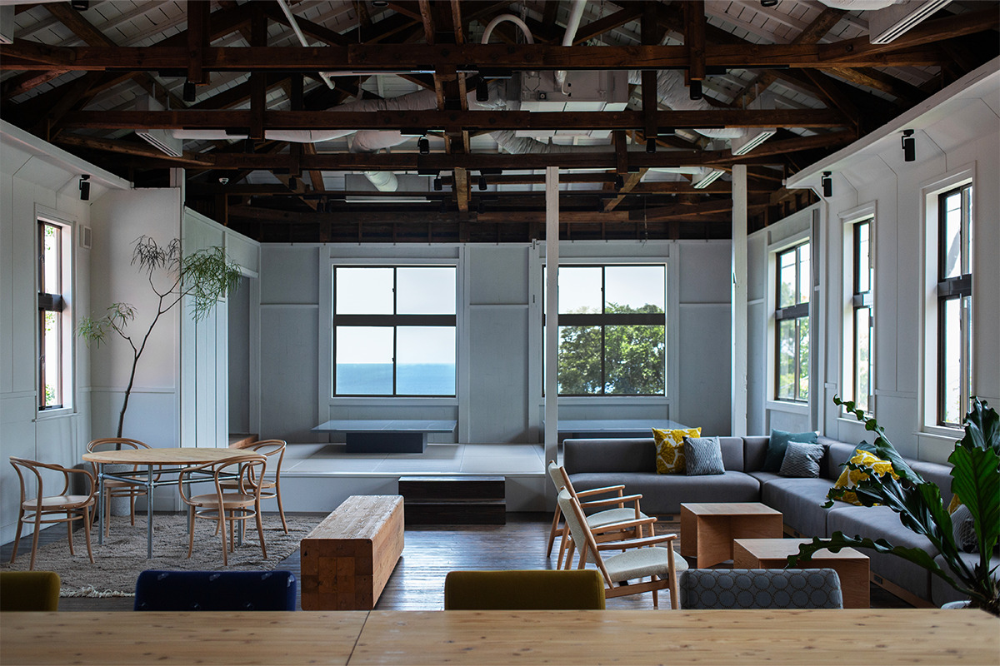
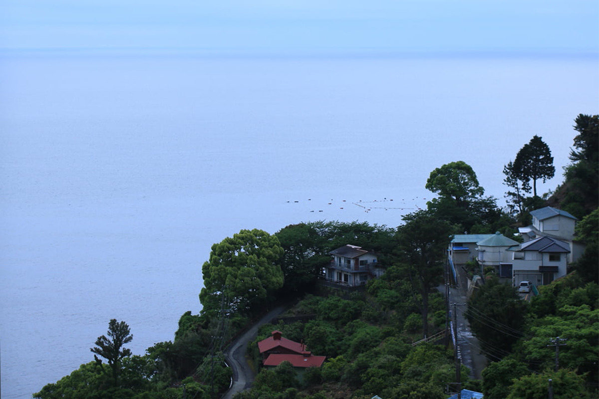
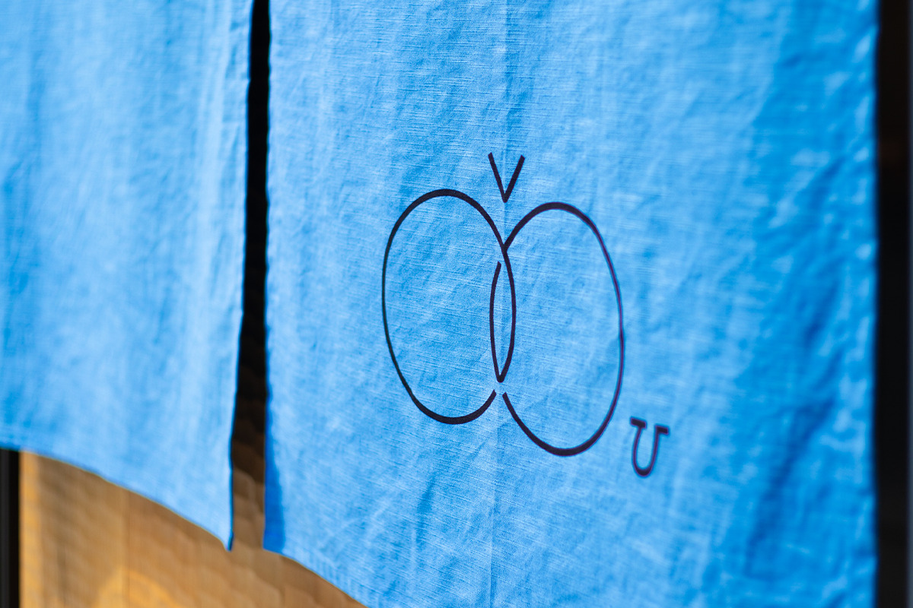
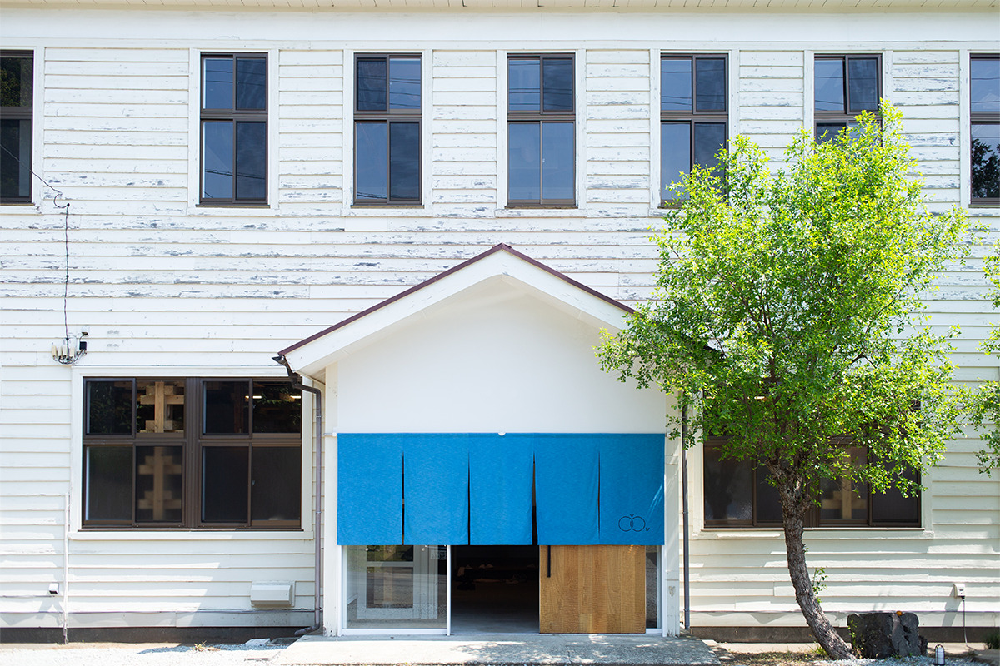
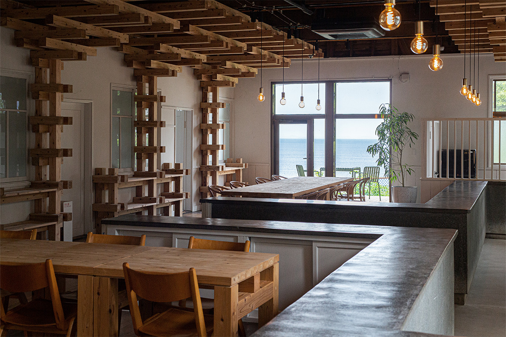
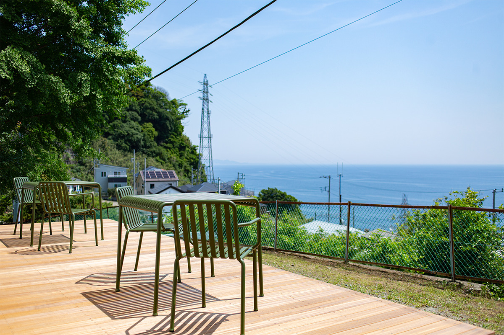
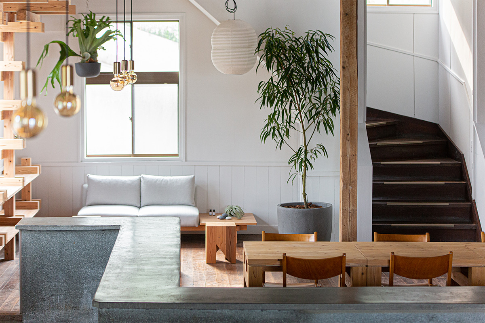
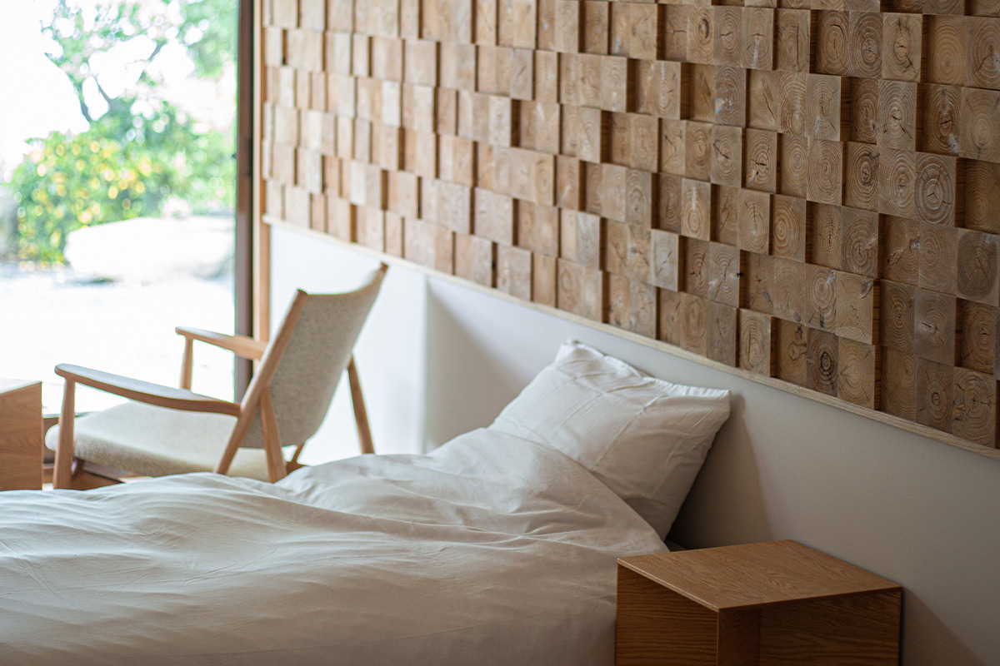
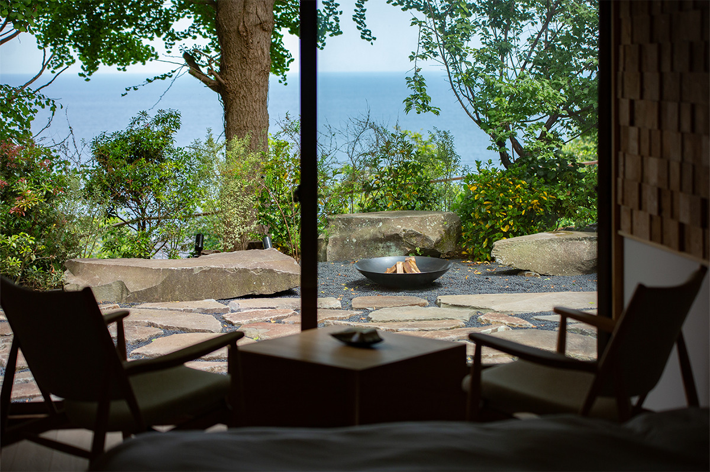
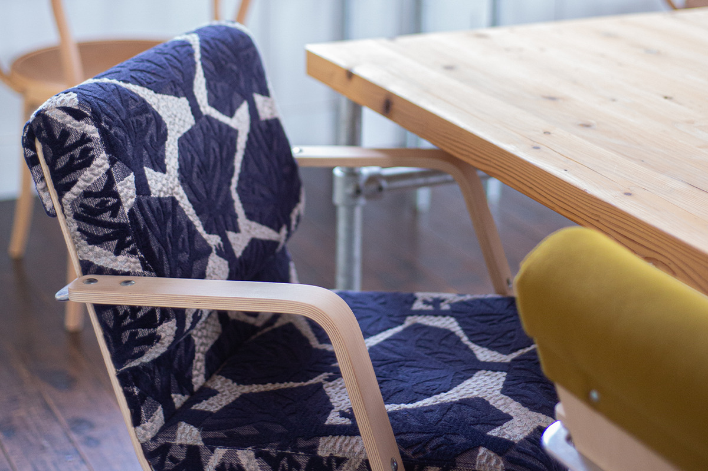

Префектура Канагава · Одавара · архитектура
Workcation House U: старое здание управы над заливом Сагами, где работают с видом на море

Нэбукава известна как станция без персонала, с платформы которой видно море. В двух минутах ходьбы стоит деревянное здание почти семидесятилетнего возраста: прежде здесь работала управа, а с 2022 года тут работают и отдыхают приезжие.
Место
Город между горами и морем
Одавара лежит в западной части префектуры Канагава. На юго-западе поднимаются крутые горы Хаконэ, на востоке тянутся пологие холмы Сога, на юго-востоке открывается залив Сагами. Климат здесь тёплый весь год, в садах растут сливы и мандарины, а тёплое течение Куросио приносит к берегу богатый улов.

Город стоит перед тяжёлым перевалом через Хаконэ, поэтому в старину он был опорой обороны всего региона Канто и одной из самых оживлённых почтовых станций на тракте Токайдо. В новое время мягкий климат и хорошая еда сделали Одавару местом отдыха для политиков и писателей. Здесь отдыхали Аритомо Ямагата (1838–1922), военный и премьер-министр эпохи Мэйдзи, и Сигэнобу Окума (1838–1922), дважды возглавлявший правительство и основавший университет Васэда, а также поэт Хакусю Китахара (1885–1942) и писатель Дзюнъитиро Танидзаки (1886–1965), автор «Мелкого снега».
Нэбукава находится в семи минутах на поезде от центра Одавары. Деревянное здание построили в 1953 году для управы деревни Катаура, потом в нём разместился филиал мэрии Одавары. Шестьдесят шесть лет, до 2019 года, местные жители приходили сюда по своим делам, а из окон всё это время был виден горизонт залива Сагами. В 2022 году бывшая управа стала площадкой для воркейшена, работы вдали от офиса, в рамках проекта, который создают вместе с местными жителями.
Идея
Почему «U»
Перестройкой занималась компания Bunshodo. Воркейшен для неё не способ делить жизнь на «работу» и «отдых»: это образ жизни, при котором всё вместе делает лучше жизнь каждого человека.

Название взято из математики. U обозначает универсальное множество, а знак ∪ означает объединение множеств. Здесь должно собираться много хорошего, чтобы человек находил вдохновение и открывал в себе что-то новое. Главная тема всего дома это связь: с местными жителями, между прошлым, настоящим и будущим, с самим собой и с другими людьми.
Архитектура
Старые балки и новые опоры
Принцип перестройки простой: беречь то, что уже есть, и добавлять новое рядом. Старые балки поддерживают новые деревянные элементы, которые сделали плотники-миядайку, мастера храмового строительства. Они одновременно укрепляют конструкцию и служат украшением.

Привычные местным жителям стены и крыша остались прежними. У здания появились новые двери, а над входом висит занавес норэн, который меняют по сезонам.
На первом этаже находится коворкинг. Опоры собраны без единого гвоздя, и большая часть древесины для них выращена в Одаваре. Стойка напоминает о временах управы, деревянный пол лишь местами перекрасили и оставили потёртым от многолетнего хождения. Матовые стёкла и двери тоже сохранились с тех времён. Часть столов и стульев сделали те же плотники из того же дерева, что и опоры. Есть и стулья из винтажного дерева и из древесины с сертификатом устойчивого лесопользования.

Большое окно со стороны моря выходит на террасу, откуда виден горизонт залива Сагами. Террасу пристроили с восточной стороны, и это одно из самых любимых мест в доме. После полудня солнце уходит за здание, терраса оказывается в тени, и здесь приятно сидеть на ветру под шум моря.

В кафе часть стен между бывшими кабинетами разобрали и поставили стойку, где подают еду и напитки.

Ночлег
Одна комната с каменным садом
В доме есть всего одна комната для ночлега. Стену в ней украшает панно из обрезков дерева, оставшихся после стройки: оно напоминает «ёсэги-дзайку», мозаику из разных пород дерева.


Сад вымощен редким камнем нэбукава-иси, который добывают здесь же, в Нэбукаве. Каменный сад и море за ним видит только гость этой комнаты. В 2026 году комнату бронируют только участники с месячным членством.
Лаунж
Бывший актовый зал
Самое светлое и открытое помещение дома находится на втором этаже. Раньше здесь был актовый зал. Потолок убрали, изнанку крыши выкрасили в белый, и под ней можно разглядеть деревянную табличку «мунэфуда», которую оставили строители на церемонии установки конька.

Столы и здесь сделаны из того же дерева, что и опоры, а ножки к ним собраны из простых стальных труб. Стулья minä perhonen, TAKT и другие выбирали так, чтобы ими пользовались годами и чтобы они красиво старели: это тоже часть идеи повторного использования. Низкий стол на возвышении скопирован с письменного стола для переписывания сутр в киотском храме Рурико-ин и покрыт зеркальным лаком. Если сесть прямо перед ним, в столешнице отражается небо. Так задуман уголок, где можно почувствовать связь с внешним миром и подумать о себе. Ступени перед возвышением частично сделаны из половиц, которые сняли, когда открывали пространство до крыши. Скамья из одаварского дерева весит почти сто килограммов: на ней сидишь основательно, словно твёрдо стоишь на земле.
Отдохнуть, поиграть или сосредоточиться на работе: в Workcation House U каждый находит то, что нужно ему именно в этот день.
Workcation House U
- Адрес
- префектура Канагава, Одавара, Нэбукава, 77-1
- Телефон
- +81 465-28-2022
- Часы работы
- 9:00–18:00
- Цены / Вход
- 500 иен в час, 2000 иен в день (с налогом, официальный сайт, 2026)
- Как добраться
- 2 минуты пешком от станции Нэбукава линии JR Токайдо
- Сайт
- u-odawara.com